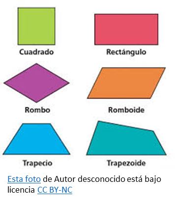
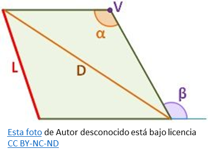

Mundo Geométrico: Descubre Un viaje por las Formas y Medidas
Cuadrilátero
Cuadrilátero
¿Qué son los cuadrilátero?
Los cuadriláteros son polígonos (figuras geométricas planas) de cuatro lados y dos diagonales. Se caracterizan por tener cuatro vértices y cuatro ángulos, y la suma de sus ángulos internos siempre es de 360°. Por ejemplo: un cuadrado, un trapecio o un rombo.

Características de los cuadriláteros Algunas de las principales características de los cuadriláteros son:
Son polígonos, es decir, figuras geométricas cerradas y planas formadas por lados y vértices.
Pueden ser simples o complejos y en todos los casos tienen cuatro lados y cuatro vértices.
Pueden tener distintas formas y siempre tienen dos diagonales.
Tienen cuatro ángulos externos y cuatro ángulos internos (que suman 360°).
Se clasifican según la suma de sus ángulos interiores en cóncavos y convexos.
Según el paralelismo de sus lados pueden ser: paralelogramos, trapecios o trapezoides.
Elementos de los cuadriláteros

Los cuadriláteros se caracterizan por tener los siguientes elementos:
Lados. Son líneas o segmentos que se unen a los vértices y que pueden o no ser iguales entre sí. Vértices. Son los puntos de intersección de los lados. Cada cuadrilátero tiene cuatro vértices. Diagonales. Son segmentos que conectan vértices opuestos. Ángulos interiores. Son los ángulos visibles que están determinados por los lados que los conforman. Los ángulos interiores de un cuadrilátero suman 360°. Ángulos exteriores. Son los ángulos que se forman con líneas (lados) imaginarias que continúan las líneas del cuadrilátero.